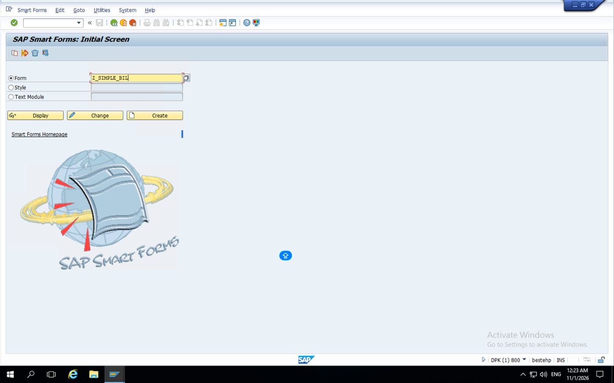
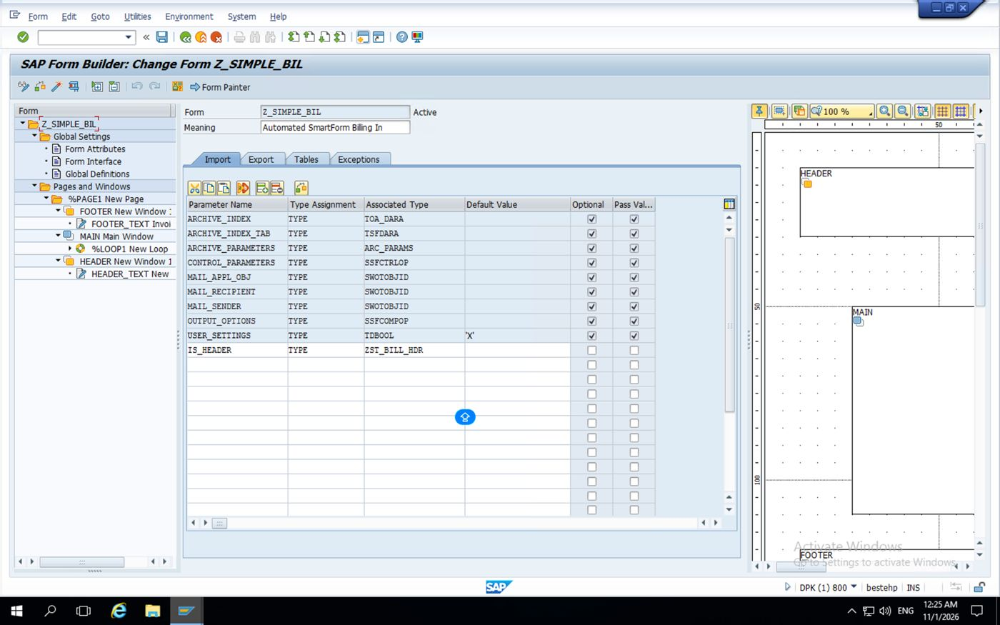
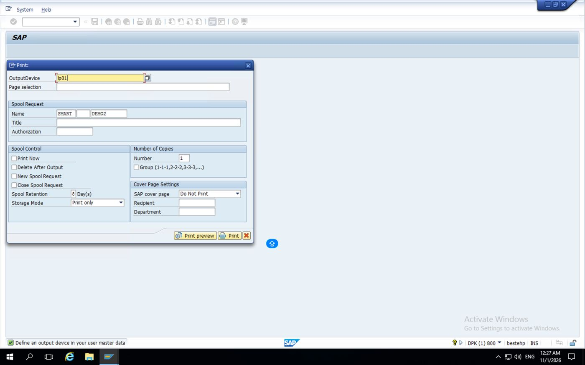
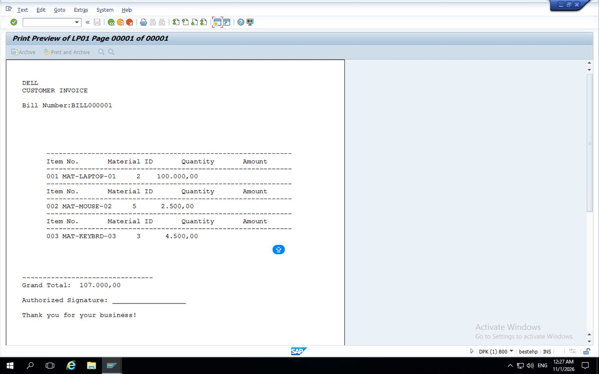
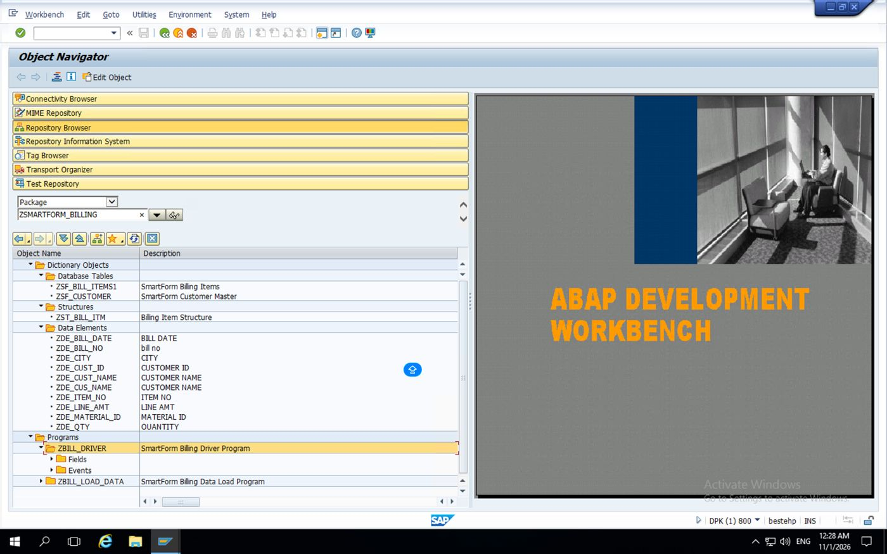

PROJECT REPORT
SMART FORMS
BILLING DOCUMENT
SAP ABAP ECC Mini Project
| Submitted by | Rathlavath Shankar |
|---|---|
| Roll Number | 24WJ5A6712 |
| Branch | B.Tech – Computer Science and Engineering (Data Science) |
| Technology | SAP ABAP – ECC / Smart Forms |
| Smart Form Name | Z_SIMPLE_BIL |
Submitted in partial fulfilment of the requirements for the academic mini project.
Certificate
This is to certify that the mini project titled “Smart Forms Billing Document using SAP ABAP ECC” is presented by Rathlavath Shankar (Roll No. 24WJ5A6712), B.Tech – Computer Science and Engineering (Data Science). The work demonstrates the design and execution flow of an SAP Smart Form and its ABAP driver program.
Faculty Guide: __________________________ Signature: __________________________
Date: __________________ Department Seal: __________________
Declaration
I hereby declare that this project report is prepared for academic purposes and describes the Smart Forms billing-document implementation, its ABAP driver program, interface, layout, and execution procedure. The screenshots included are the SAP GUI evidence supplied with the project request.
Student Signature: __________________________
Acknowledgement
I express my sincere thanks to my faculty and department for their guidance and support. I also acknowledge the SAP training environment used to practise ABAP programming and Smart Forms development.
Abstract
This project demonstrates how SAP Smart Forms can be used to generate a formatted billing document from an ABAP program. A driver report prepares header and item data, calls the generated Smart Form function module dynamically, and passes the data through the form interface. The form displays company information, bill number, date, customer details, line items, quantities, rates, amounts, and a grand total. The supplied screenshot shows the Smart Forms initial screen with the form name Z_SIMPLE_BIL entered. The remaining design and test steps in this report provide a reproducible implementation guide; they should be completed and tested in the SAP system.
1. Introduction
SAP Smart Forms is a form-generation tool used to print or preview business documents such as invoices, purchase orders, delivery notes, payslips, and statements. A Smart Form is designed in transaction SMARTFORMS. An ABAP driver program supplies the data and calls the generated function module.
2. Problem Statement
Preparing bills manually can lead to inconsistent layouts, arithmetic mistakes, and repeated effort. This mini project provides a reusable form layout that receives structured billing data from ABAP and presents it as a consistent printable document.
3. Objectives
Create a Smart Form named Z_SIMPLE_BIL in SAP ECC.
Define a typed form interface for billing header and item data.
Design a readable invoice layout with item details and totals.
Develop an ABAP driver report to populate and pass data.
Preview and test the generated billing document.
4. Scope and Assumptions
This report provides a self-contained demonstration using sample data created in the ABAP driver program. It does not assume that a custom billing database table already exists. In a production implementation, the sample data section can be replaced with SELECT statements from approved application tables. Tax, discounts, currency conversion, authorisations, and archival are outside this basic mini-project scope.
5. Software and Tools
SAP ECC ABAP system with SAP GUI access
Transaction SMARTFORMS for form design
SE38 or SE80 for the ABAP driver report
ABAP Dictionary types (SE11) or local TYPES declarations
A development package and transport request, according to system policy
6. Project Architecture
Execution flow: User runs driver report → report prepares header and item internal table → report resolves the generated Smart Form function module → function module receives interface parameters → Smart Form renders the page → user previews or prints the billing document.
7. Object Inventory
| Object | Suggested name | Purpose |
|---|---|---|
| Smart Form | Z_SIMPLE_BIL | Automated billing invoice layout |
| Driver report | ZBILL_DRIVER | Billing Smart Form driver program shown in the package |
| Form interface | IS_HEADER | Header import parameter visible in the form interface screenshot |
| Generated FM | Generated by SAP | Runtime function module; do not hard-code its name |
8. Data Design
The following local ABAP types are used in the sample driver. The same field names and compatible types must be created in the Smart Form interface.
| Structure | Field | Meaning |
|---|---|---|
| TY_HEADER | BILL_NO | Billing document number |
| TY_HEADER | BILL_DATE | Document date |
| TY_HEADER | CUSTOMER | Customer name |
| TY_HEADER | ADDRESS | Customer address |
| TY_HEADER | CURRENCY | Currency key |
| TY_ITEM | ITEM_NO | Line item number |
| TY_ITEM | DESCRIPTION | Item/service description |
| TY_ITEM | QUANTITY | Quantity |
| TY_ITEM | UNIT_PRICE | Price per unit |
| TY_ITEM | AMOUNT | Quantity × unit price |
9. Smart Form Creation – Step by Step
1. Open SMARTFORMS: Enter transaction SMARTFORMS in the command field.
2. Create the form: Select Form, enter Z_SIMPLE_BIL, and choose Create. The supplied screenshot shows this name entered on the initial screen.
3. Set form attributes: In the form builder, maintain a meaningful description such as “Simple Billing Document”. Save the form in your development package and assign a transport request if prompted.
4. Create the interface: Open Form Interface. Create importing parameter IS_HEADER with a compatible header structure and IT_ITEMS as a table parameter. The interface must match the driver program.
5. Create global definitions: If using Dictionary structures, declare their types in the interface. Alternatively, define compatible DDIC structures in SE11. Keep the interface types consistent.
6. Design pages and windows: Use the default page FIRST. Keep a MAIN window for the item table and create secondary windows for title/header, customer address, and totals if needed.
7. Add text and table nodes: Add company heading, invoice number/date, customer details, then a Table node in MAIN for item rows.
8. Add totals: Place a text node after the table or in a suitable footer window and bind it to a total field. The example below passes LV_TOTAL.
9. Activate: Check and activate the Smart Form. Resolve all syntax/interface errors before testing.
10. Test through driver report: Create and run ZBILL_DRIVER. The report obtains the generated function module name at runtime and calls it with the sample data.
10. Smart Form Interface Definition
The supplied Form Builder screenshot confirms an importing parameter named IS_HEADER with type ZST_BILL_HDR. It also displays the standard Smart Forms parameters. The item rows are visible in the final print preview; their exact interface/context binding is not fully exposed by the screenshots, so verify the active form context and driver program before changing parameter names.
| Parameter | Direction / Type | Description |
|---|---|---|
| IS_HEADER | Importing – TYPE ZST_BILL_HDR | Billing header structure shown in SAP Form Builder |
| Standard SAP parameters | Default interface parameters | Standard archive, control, mail and output parameters are also displayed |
Recommended DDIC setup: create structure ZS_BILL_HEAD with BILL_NO (CHAR10), BILL_DATE (DATS), CUSTOMER (CHAR40), ADDRESS (CHAR100), CURRENCY (CUKY); create structure ZS_BILL_ITEM with ITEM_NO (NUMC3), DESCRIPTION (CHAR50), QUANTITY (QUAN with suitable reference unit), UNIT_PRICE and AMOUNT (CURR with currency reference); then create table type ZTT_BILL_ITEM based on ZS_BILL_ITEM. For a small training system, compatible elementary/local types may be used, but DDIC types are preferable for Smart Form interfaces.
11. Complete ABAP Driver Program (ZBILL_DRIVER)
REPORT zrep_simple_bill.
"Demo driver report for Smart Form Z_SIMPLE_BIL.
"Create matching DDIC structures/table type and Smart Form interface first.
TYPES: BEGIN OF ty_header,
bill_no TYPE c LENGTH 10,
bill_date TYPE sy-datum,
customer TYPE c LENGTH 40,
address TYPE c LENGTH 100,
currency TYPE waers,
END OF ty_header.
TYPES: BEGIN OF ty_item,
item_no TYPE n LENGTH 3,
description TYPE c LENGTH 50,
quantity TYPE p LENGTH 7 DECIMALS 2,
unit_price TYPE p LENGTH 8 DECIMALS 2,
amount TYPE p LENGTH 9 DECIMALS 2,
END OF ty_item.
TYPES ty_t_item TYPE STANDARD TABLE OF ty_item WITH DEFAULT KEY.
DATA: ls_header TYPE ty_header,
lt_items TYPE ty_t_item,
ls_item TYPE ty_item,
lv_total TYPE p LENGTH 10 DECIMALS 2,
lv_fm TYPE rs38l_fnam.
START-OF-SELECTION.
CLEAR ls_header.
ls_header-bill_no = 'BILL000001'.
ls_header-bill_date = sy-datum.
ls_header-customer = 'ABC Technologies'.
ls_header-address = 'Hyderabad, Telangana'.
ls_header-currency = 'INR'.
CLEAR lt_items.
CLEAR ls_item.
ls_item-item_no = '001'.
ls_item-description = 'ABAP Development Service'.
ls_item-quantity = '2.00'.
ls_item-unit_price = '1500.00'.
ls_item-amount = ls_item-quantity * ls_item-unit_price.
APPEND ls_item TO lt_items.
CLEAR ls_item.
ls_item-item_no = '002'.
ls_item-description = 'Smart Form Configuration'.
ls_item-quantity = '1.00'.
ls_item-unit_price = '2500.00'.
ls_item-amount = ls_item-quantity * ls_item-unit_price.
APPEND ls_item TO lt_items.
CLEAR lv_total.
LOOP AT lt_items INTO ls_item.
lv_total = lv_total + ls_item-amount.
ENDLOOP.
"Get the generated function module name; never guess or hard-code it.
CALL FUNCTION 'SSF_FUNCTION_MODULE_NAME'
EXPORTING
formname = 'Z_SIMPLE_BIL'
IMPORTING
fm_name = lv_fm
EXCEPTIONS
no_form = 1
no_function_module = 2
OTHERS = 3.
IF sy-subrc <> 0 OR lv_fm IS INITIAL.
MESSAGE 'Smart Form Z_SIMPLE_BIL is not active or could not be found' TYPE 'E'.
ENDIF.
"These parameter names must exactly match the Smart Form interface.
CALL FUNCTION lv_fm
EXPORTING
is_header = ls_header
it_items = lt_items
iv_total = lv_total
EXCEPTIONS
formatting_error = 1
internal_error = 2
send_error = 3
user_canceled = 4
OTHERS = 5.
IF sy-subrc <> 0.
MESSAGE 'Error while generating the billing form' TYPE 'E'.
ENDIF.
Code note: the driver listing above is a complete reference implementation pattern. Your actual package screenshot shows the driver program ZBILL_DRIVER and load program ZBILL_LOAD_DATA, while the Form Builder screenshot confirms IS_HEADER TYPE ZST_BILL_HDR. If you use the reference code, align its report name, data types, and function-module parameters with the active objects in your SAP system. Do not assume the illustrative interface names are identical to the implementation shown in the screenshots.
12. Smart Form Layout – Node-by-Node
PAGE FIRST – Use portrait A4 page format. Keep reasonable margins.
WINDOW HEADER – Add a text node: “ABC TECHNOLOGIES – BILLING INVOICE”. Add another text node for Bill No. and Date, using the interface fields.
WINDOW CUSTOMER – Add text for customer name and address. Bind to IS_HEADER-CUSTOMER and IS_HEADER-ADDRESS.
MAIN WINDOW – TABLE – Create a Table node. Header row: Item, Description, Quantity, Unit Price, Amount. Main area: loop over IT_ITEMS and bind each cell to the current line fields ITEM_NO, DESCRIPTION, QUANTITY, UNIT_PRICE, AMOUNT.
WINDOW TOTAL – Display “Grand Total” and bind the amount to IV_TOTAL. Display currency from IS_HEADER-CURRENCY.
FOOTER – Add a short note such as “Thank you for your business.”
In Smart Forms, field insertion is performed from the form context tree into text nodes or table cells. Exact editor controls vary slightly by SAP GUI release. Use the context tree to insert fields rather than typing guessed field references into arbitrary node properties.
13. Workflow Diagram (Text Representation)
START – execute ZBILL_DRIVER
Populate billing header and item internal table
Calculate each item amount and the grand total
Call SSF_FUNCTION_MODULE_NAME for Z_SIMPLE_BIL
Call the generated Smart Form function module
Smart Form prints header, customer, item table, and total
END – preview / print / spool output
14. Execution Procedure
Activate all DDIC structures and table types (if created).
Open SMARTFORMS and activate Z_SIMPLE_BIL.
Open SE38, create report ZBILL_DRIVER, paste the driver code, and activate it.
Execute the report (F8).
Check the print preview or spool request. If output is not displayed, inspect the Smart Form output options and the function module exceptions.
Verify the bill number, customer details, both item rows, line amounts, grand total, and currency.
15. Expected Demonstration Data
| Item No. | Material ID | Quantity | Unit Price | Amount (as displayed) |
|---|---|---|---|---|
| 001 | MAT-LAPTOP-01 | 2 | — | 100,000.00 |
| 002 | MAT-MOUSE-02 | 5 | — | 2,500.00 |
| 003 | MAT-KEYBRD-03 | 3 | — | 4,500.00 |
Observed Grand Total in the supplied SAP print preview: 107,000.00 (displayed as 107.000,00 in the preview).
16. Test Cases
| Test | Input / Action | Expected result | Status |
|---|---|---|---|
| TC-01 | Open Smart Form Z_SIMPLE_BIL | Form Builder opens and shows the active form | Observed |
| TC-02 | Check Form Interface | IS_HEADER is typed with ZST_BILL_HDR | Observed |
| TC-03 | Execute print output | Print dialog is displayed with output device LP01 | Observed |
| TC-04 | Open print preview | DELL invoice BILL000001 is displayed | Observed |
| TC-05 | Verify item values | Three material rows are displayed | Observed |
| TC-06 | Verify grand total | Preview displays 107,000.00 | Observed |
17. Troubleshooting
Form not found: Check spelling Z_SIMPLE_BIL, package, client, and activation status.
Generated function module not found: Activate the form, then let SSF_FUNCTION_MODULE_NAME resolve the current generated FM.
Formal parameter unknown: The driver parameter names must match the Smart Form interface exactly.
Type conflict: Use active DDIC structures and table types compatible with the interface.
Blank preview / no spool: Review Smart Form output options, printer destination, dialog preview settings, and spool authorisations.
Text fields show blanks: Check that fields were inserted from the correct interface/context nodes.
Amount formatting incorrect: Use currency-aware DDIC CURR fields and currency references in a production version.
18. Security, Reliability and Best Practices
Do not hard-code the generated Smart Form function module name; resolve it with SSF_FUNCTION_MODULE_NAME.
Use DDIC structures and currency/quantity reference fields for production-quality interfaces.
Validate input values and totals before calling the form.
Avoid placing confidential customer information in test data.
Keep form layout and driver logic separate.
Use transport requests and naming conventions approved by the SAP administrator.
19. Limitations and Future Enhancements
The supplied screenshots now document the Smart Form initial screen, the Form Builder and its IS_HEADER interface, the print-output dialog, the generated invoice preview, and the development package objects. The preview shows a DELL customer invoice (BILL000001) with three material rows and a grand total of 107,000.00. The package view also shows the billing data tables, structure, data elements, and driver/load programs.
20. Conclusion
The mini project explains the end-to-end design of a billing document using SAP Smart Forms and an ABAP driver report. It demonstrates separation of data preparation from presentation, interface-based parameter passing, dynamic generated-function-module resolution, tabular item output, and total calculation. Once the form layout and interface are activated and tested in SAP ECC, the solution can be extended for real business billing scenarios.
Appendix A – Updated SAP Smart Forms Project Screenshots
The following screenshots replace the earlier unrelated Student Management System screenshots. They show the actual Smart Forms billing project workflow and its generated invoice output.
Screenshot 1 – SAP Smart Forms initial screen with the form name Z_SIMPLE_BIL entered.

Screenshot 2 – SAP Form Builder for Z_SIMPLE_BIL. The Form Interface shows IS_HEADER with type ZST_BILL_HDR, and the page tree contains HEADER, MAIN and FOOTER windows.

Screenshot 3 – Print-output dialog. Output device LP01 is selected before preview/printing.

Screenshot 4 – Generated DELL customer invoice preview, bill number BILL000001, three material rows, and grand total 107,000.00.

Screenshot 5 – Development package ZSMARTFORM_BILLING showing billing tables, structure, data elements, ZBILL_DRIVER and ZBILL_LOAD_DATA.

Output observation: the supplied print preview repeats the item-column headings before each material row. This confirms that the data is printed, but the layout can be improved by moving the column headings into the table header row so they appear once above all item rows. The amounts visible in the preview are 100,000.00, 2,500.00 and 4,500.00; the displayed grand total is 107,000.00.
Appendix B – Viva / Review Questions
What is SAP Smart Forms?
A SAP tool for designing and generating formatted business documents.
What is the role of the driver program?
It prepares data and calls the generated Smart Form function module.
Why use SSF_FUNCTION_MODULE_NAME?
The generated function module name is system-generated and can change; this API resolves it safely.
What is the MAIN window?
The window that can continue across pages and is commonly used for flowing item data.
How is data passed to a Smart Form?
Through its form interface parameters.
What is the difference between a Smart Form and a SAPscript form?
Smart Forms provides a graphical form builder and generates a function module; SAPscript uses a different legacy form technology.